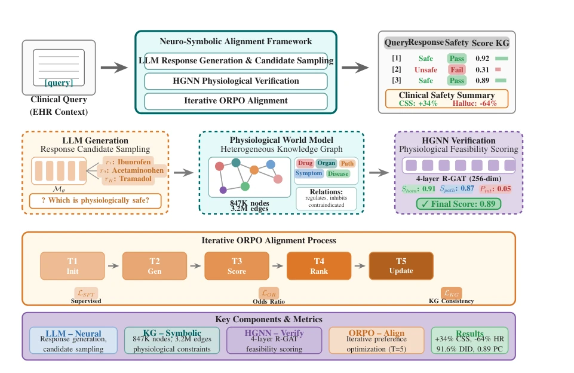
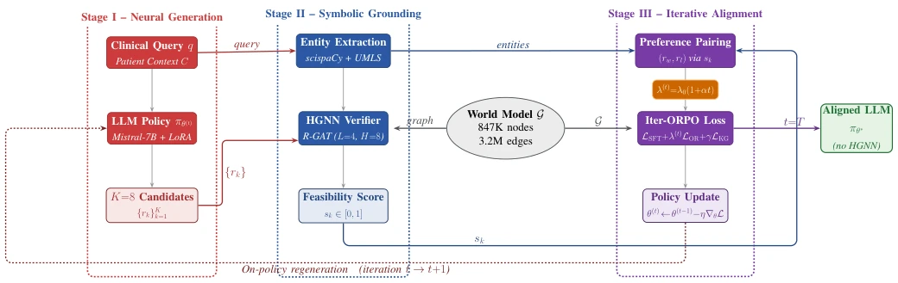
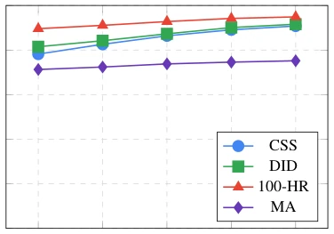
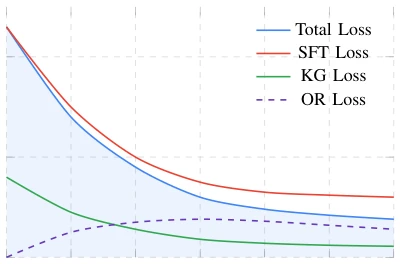
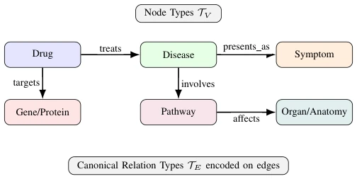
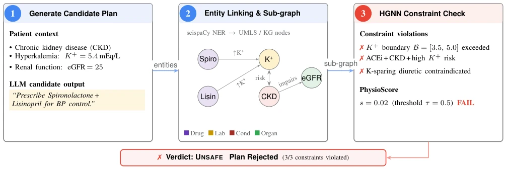

This paper equips clinical large models with a "physiological talisman", attempting to use neurosymbolic alignment to solve the stubborn problem of "factually correct but physiologically lethal". The highlight is that it does not rely on expensive manual annotation, but uses a physiological world model constructed with HGNN for automatic scoring, managing to pull the 7B model's Clinical Safety Score (CSS) from 69.5% to 90.8%, even outperforming GPT-4 (5-shot). However, there are also many drawbacks: this "talisman" is only worn during training and removed during inference, implying the model might just have "memorized the question bank" rather than truly "understanding physiology"; moreover, once the relied-upon 840k-node knowledge graph becomes outdated, the model has to start over, and this "static snapshot" appears somewhat fragile in the rapidly changing medical field. Additionally, evaluation is entirely on synthetic data, whether it can survive in a real hospital ICU remains questionable.
Clinical large models (LLMs) often make "logically consistent but physiologically lethal" errors in medical Q&A, such as recommending schemes that are factually correct but lead to hyperkalemia or drug interactions [1][2]. Existing methods such as Retrieval-Augmented Generation (RAG) [6] mainly solve fact retrieval, fine-tuning (SFT) only improves terminology style, neither can enforce physiological consistency in multi-step reasoning. Preference optimization methods (such as DPO/ORPO) [7][8] can improve alignment, but lack high-quality supervision signals for subtle physiological relationships (such as multi-hop paths, homeostatic boundaries), leading to models still possibly "confidently spouting nonsense" in complex clinical scenarios. This paper aims to fill this gap by introducing an explicit physiological world model, converting structured knowledge into preference signals, solving physiological constraint problems that pure text supervision cannot cover.
Core proposal is the "Neurosymbolic Alignment" framework, adopting an architecture of "alignment during training, pure model during inference". The Pipeline is divided into three stages: First, LLM (Mistral-7B) generates K=8 candidate responses for clinical queries; Second, utilize an HGNN-based Physiological World Model to score the feasibility of candidate responses. The model is based on a heterogeneous graph containing 847k nodes, 3.2M edges (integrating UMLS, DrugBank, etc.), generating a comprehensive score s = Shom · σ(Spath) · (1 − Pint) by calculating homeostatic constraints (Shom), multi-hop path rationality (Spath), and drug interaction penalty (Pint); Finally, build preference pairs based on scores, drive Iterative Online Policy Optimization (Iterative ORPO), resample and update policy each round until convergence. Innovations lie in: 1) Automatically construct physiological preference signals, no manual annotation needed; 2) Iterative alignment mechanism, gradually solve finer constraint violations; 3) Remove HGNN during inference stage, reduce deployment latency, keep only the aligned LLM.

Fig. 1. Training-time neurosymbolic pipeline. The base LLM samples candidate clinical responses, the Physiological World Model scores their feasibility, and Iterative ORPO updates the policy. At inference, only the aligned LLM is used.

Fig. 2. Training-time neuro-symbolic alignment: the LLM samples candidates, the HGNN scores physiological feasibility on G, and Iterative ORPO updates the policy (HGNN not used at inference).
Constructed a Clinical Safety Benchmark (CSB) containing 2500 scenarios, covering homeostatic violations, drug interactions, etc. Compared 14 baselines, including SFT, RAG, DPO, ORPO, GPT-4 (5-shot), and self-correction pipeline. Results show, this method reaches 90.8% on CSS (+21.3pp), Doctor-evaluated Hallucination Rate (HR) drops to 5.1%, Drug Interaction Detection (DID) reaches 91.6%, all better than GPT-4. Ablation experiments show, HGNN scoring (-16.2pp) and Iterative training (-11.5pp) are the main contributions. Under synthetic noise CSS remains 84.2%. But note, evaluation is entirely based on synthetic data, and RSS and CSS are highly correlated (r=0.97), there may be evaluation loop risk, real clinical data validation is still missing.

Fig. 4. Performance progression across training iterations. CSS and DID show the steepest improvements in early iterations, while gains diminish after iteration 4. The inverted hallucination rate (100-HR) demonstrates consistent safety improvements throughout training.

Fig. 5. Training loss convergence over 30K steps. Total loss decreases from 2.3 to 0.38, with KG loss showing the fastest convergence. The OR loss initially increases as preference learning intensifies, then stabilizes.
其他图片Other Figures

Fig. 3. Schema of the heterogeneous physiological knowledge graph showing the six node types (TV ) and five canonical relation types (TE).

Fig. 6. Step-wise toy example of constraint verification. A candidate plan is generated, entities are linked to the physiological graph, and HGNN-based checks reject the plan due to hyperkalemia-related contraindications.